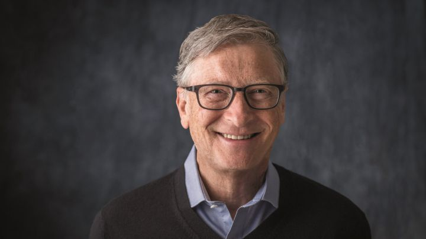

Bill Gates
William Henry Gates III, mejor conocido como Bill Gates, es un empresario, informático y filántropo estadounidense, conocido por haber creado y fundado junto con Paul Allen, la empresa Microsoft. De igual forma es conocido por haber creado, también con Paul Allen, el sistema operativo para computadoras Windows.
Es uno de los empresarios más conocidos que surgieron durante los inicios de los ordenadores personales. Ha sido criticado por sus tácticas de negocios, que han sido consideradas anticompetitivas, una opinión que en algunos casos ha sido mantenida por numerosas sentencias judiciales. En 1999, Gates donó 20 millones de dólares al Massachusetts Institute of Technology (MIT) para la construcción de un laboratorio de computación llamado "William H. Gates Building", diseñado por el arquitecto Frank Gehry. Aunque Microsoft había dado anteriormente apoyo financiero a la institución, esta fue la primera donación personal recibida de Gates.
<1>> <2>> <3>> <4>>